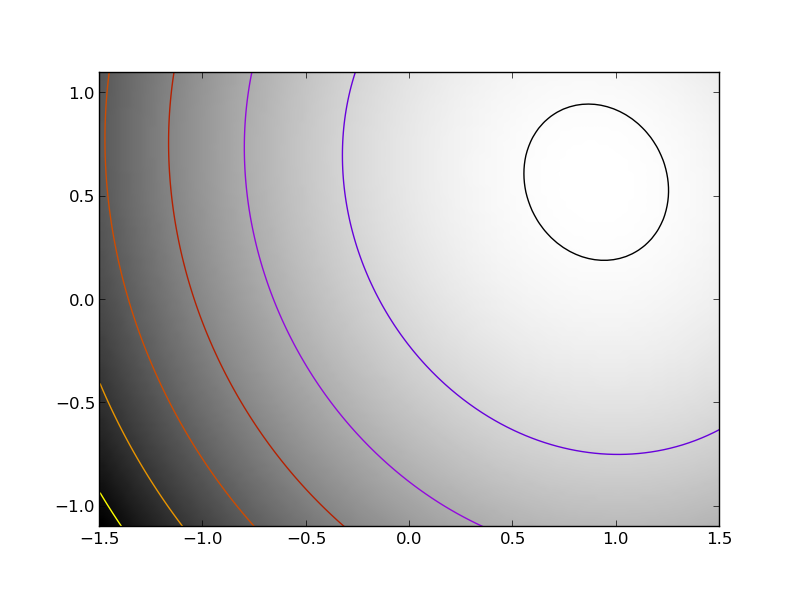

The challenge here is that Hessian of the problem is a very ill-conditioned matrix. This can easily be seen, as the Hessian of the first term in simply 2*np.dot(K.T, K). Thus the conditioning of the problem can be judged from looking at the conditioning of K.
Python source code: plot_exercise_ill_conditionned.py
import time
import numpy as np
from scipy import optimize
import pylab as pl
np.random.seed(0)
K = np.random.normal(size=(100, 100))
def f(x):
return np.sum((np.dot(K, x - 1))**2) + np.sum(x**2)**2
def f_prime(x):
return 2*np.dot(np.dot(K.T, K), x - 1) + 4*np.sum(x**2)*x
def hessian(x):
H = 2*np.dot(K.T, K) + 4*2*x*x[:, np.newaxis]
return H + 4*np.eye(H.shape[0])*np.sum(x**2)
###############################################################################
# Some pretty plotting
pl.figure(1)
pl.clf()
Z = X, Y = np.mgrid[-1.5:1.5:100j, -1.1:1.1:100j]
# Complete in the additional dimensions with zeros
Z = np.reshape(Z, (2, -1)).copy()
Z.resize((100, Z.shape[-1]))
Z = np.apply_along_axis(f, 0, Z)
Z = np.reshape(Z, X.shape)
pl.imshow(Z.T, cmap=pl.cm.gray_r, extent=[-1.5, 1.5, -1.1, 1.1],
origin='lower')
pl.contour(X, Y, Z, cmap=pl.cm.gnuplot)
# A reference but slow solution:
t0 = time.time()
x_ref = optimize.fmin_powell(f, K[0], xtol=1e-10, ftol=1e-6, disp=0)
print ' Powell: time %.2fs' % (time.time() - t0)
f_ref = f(x_ref)
# Compare different approaches
t0 = time.time()
x_bfgs = optimize.fmin_bfgs(f, K[0], disp=0)[0]
print ' BFGS: time %.2fs, x error %.2f, f error %.2f' % (time.time() - t0,
np.sqrt(np.sum((x_bfgs - x_ref)**2)), f(x_bfgs) - f_ref)
t0 = time.time()
x_l_bfgs = optimize.fmin_l_bfgs_b(f, K[0], approx_grad=1, disp=0)[0]
print ' L-BFGS: time %.2fs, x error %.2f, f error %.2f' % (time.time() - t0,
np.sqrt(np.sum((x_l_bfgs - x_ref)**2)), f(x_l_bfgs) - f_ref)
t0 = time.time()
x_bfgs = optimize.fmin_bfgs(f, K[0], f_prime, disp=0)[0]
print " BFGS w f': time %.2fs, x error %.2f, f error %.2f" % (
time.time() - t0, np.sqrt(np.sum((x_bfgs - x_ref)**2)),
f(x_bfgs) - f_ref)
t0 = time.time()
x_l_bfgs = optimize.fmin_l_bfgs_b(f, K[0], f_prime, disp=0)[0]
print "L-BFGS w f': time %.2fs, x error %.2f, f error %.2f" % (
time.time() - t0, np.sqrt(np.sum((x_l_bfgs - x_ref)**2)),
f(x_l_bfgs) - f_ref)
t0 = time.time()
x_newton = optimize.fmin_ncg(f, K[0], f_prime, fhess=hessian, disp=0)[0]
print " Newton: time %.2fs, x error %.2f, f error %.2f" % (
time.time() - t0, np.sqrt(np.sum((x_newton - x_ref)**2)),
f(x_newton) - f_ref)
pl.show()